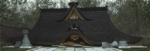

- Welcome to Touhou Wiki!
- Please register to edit. For assistance, check in with our Discord server or IRC channel.
Fan-made characters/Meimu
|  | Attention: This article is a stub and it needs expanding with more information related to the article's topic. If you can add to it in any way, please do so. |
| 冥梦 冥夢 Meimu | |
|---|---|
|
Illustration of Meimu (with a child version of her)
| |
| Species |
Human(?) |
Meimu (Simp. Chinese: 冥梦, Trad. Chinese: 冥夢, Pinyin: Míng mèng; Japanese:
Character Basis[edit]
Meimu is highly based on Reimu Hakurei. When Reimu once again lost on a Touhou Popularity Poll for the last time, AUER decided to create Meimu, possibly because of the poll.
Name[edit]
Her name Meimu (冥梦) means "dark dream" is intended to sound a lot like Reimu's. The first hanzi, 冥 (Pinyin: míng; Romaji: mei) means "dark or "deep" while 梦 (Pinyin: mèng; Romaji: mu) means "dream".
Design[edit]
As a human,Reimu is not a so good choice for Yukari to keep Gensokyo in peace,who is a youkai having long life.Because she cannot avoid death,which comes in 100 to 200 years later or so,though Gensokyo has already slowed down her ageing.So at first sight of Meimu,Yukari tended to educate her into the one who can take this important responsibility. Though Meimu have an appearance of human being,due to her "质"(meaning very tiny things consisting of the big one,like atom),which consist her, she is not youkai or human.Meimu can freely control "质",and she can destroy things and repair things including herself through "质"(but she cannot return life loss of things during destruction).So as for Meimu,living or death is meaningless.She has two appearance, one is big and the other one is small.She has a great power,but she cannot use it in the right way.So Yukari has to teach her how to use her power other than only destroying things.Her weak spots are easy to be found.For example,she likes having food she thinks delicious,and she is strongly against having pungent/hot food.When getting the food her wants,she behaves very submissive.In the big status,she also likes drinks like wine or tea.Compared with her small status,her big status differently shows more easy-going.Though her thoughts when in big or small are the same,bad experience and other things not deserving her memory in the other status are blank,just like the changing character of growing and grown human being.Yukari likes taking advantage of this to play jokes on her,thus making Meimu hates Yukari a bit both in her two statuses."质" is just like Meimu's subconcious,and it isn't the main controller."质" has been existing since space came into being.Because Yukari is consistent with space,so "质" can't be aware of her existence.What Reimu has done makes "质" feel interested,but 质" deletes those it doesn't meet and some wrong or lost things in later data modification.So though Meimu is a copy of Reimu,their characters and appearances are different.Apparently,Meimu's big status is bigger than Reimu,and small status is much smaller.Because of what "质" has lost,Meimu shows curious about what she rarely meets,and she has a lot to learn from the start.This is another chance for Yukari to play jokes on her.Meimu dislikes failure,and she hate just giving up things she can't get in her hands.However,this things usually is food,so this cannot produce any terrible result.As said above,she hates hot food,and she will perform her power if forced to have regardless of the result.In this situation,it also has a chance that she would turn into big status,and this is one of the reasons she changes into another appearance.Once again,Yukari likes this,and she will try letting Meimu have hot food,then leaving big destruction.But she isn't afraid of this,because she can easily let Meimu use her "质" to turn everything into the old status.
Relationships[edit]
- Yukari Yakumo (Family)
- Ran Yakumo (Housekeeper,Friend(When big))
- Chen (Friend(When small))
- Reimu Hakurei (Friend(When big)/Enemy(When small))
Gallery[edit]
There are some art of Meimu all drawn by AUER.
Fanon Culture[edit]
- Surname: Due to the simalaraties between Meimu and Reimu, it's common for western fans to call her Meimu Hakurei (Simp. Chinese: 博丽冥梦, Trad. Chinese: 博麗冥夢), Pinyin: Bó lì míng mèng; Japanese:
博麗 冥梦 Hakurei Meimu). - Ex Reimu: Many western fans do consist that Meimu is Reimu's "Ex" form. Others sometimes say Meimu to be a dark version of Reimu who is covered in pure evil.
See Also[edit]
- AUER on Danbooru to see all his links to his web spaces. (NSFW)
- AUER's Baidu Space (Simplified Chinese)
References[edit]
- ↑ AUER (29 August 2007). "【有爱物】东方自创人物Ⅰ:冥梦...详细介绍+设定+CG...". Retrieved 13 October 2011.